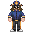
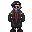
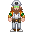
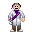
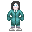
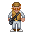
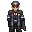

Подчиняется:
ЦентКом
Описание:
Глава объекта. Занимается руководством всей станции, главные его помощники это главы отделов.
Иерархия Командования • Особо ценные предметы
Подчиняется:
Капитан
Описание:
Руководит отделом Сервиса. Принимает и увольняет работников, редактирует доступ ID-карт.
Иерархия Командования

Подчиняется:
Капитан
Описание:
Управляет отделом жалких породий на клоуна. Хранит диск за капитана.
Иерархия Командования • Космический Закон • Офицерство

Подчиняется:
Капитан
Описание:
Управляет инженерным отделом и следит за сохранностью станции.
Иерархия Командования • Инженерия • Сингулярный двигатель • Двигатель антиматерии • Суперматерия • Трубы • Шаттлостроение

Подчиняется:
Капитан
Описание:
Глава исследований и разработки. Следит за работой отдела, а также за выполнением их задач.
Иерархия Командования • Ксеноархеология • Аномалии • Боргостроение • Робототехника • Экзокостюмы

Подчиняется:
Капитан
Описание:
В начале смены отдыхает, а к концу пытается избавиться от трупов на полу, вместе со всем мед отделом.
Иерархия Командования • Медицина • Химия • Медицинский инвентарь

Подчиняется:
Капитан
Описание:
Следит за работой отдела, несет ответственность за шаттл карго, а также должен одобрять или отклонять запросы.
Иерархия Командования • Советы по Карго • Список товаров

Подчиняется:
Капитан
Описание:
Контролирует выполнение целей станции. А также всеми юридическими вопросами.
Иерархия Командования
Все, кроме капитана являются Главами отделов. Каждый из них имеет доступ к Мостику и может сделать объявление или вызывать/отозвать шаттл при помощи Консоли Коммуникаций.
Вы - капитан станции, верхушка в пищевой цепочке командования. Ваша обязанность - обеспечить стабильность и работоспособность станции, а также выполнять указания Центрального Командования.
Вы должны иметь опыт работы на всех руководящих должностях. В начале раунда возьмите с собой Диск Ядерной Аутентификации, свяжитесь с Главами и проведите небольшой брифинг, продолжайте время от времени проверять, что все работает как часы.
У Капитана есть просторная каюта, в комплекте с которой идут: Идентификационная и Коммуникационная Консоли, Диск Ядерной Аутентификации.
В начале смены возьмите ваш запасной ID, Диск Ядерной Аутентификации и положите их в рюкзак. Передайте Пинпоинтер Главе Службы Безопасности. После этого вы вольны делать все, что посчитаете нужным.
Когда вы не сражаетесь с революционерами или предателями, вы наблюдаете за экипажем. Находясь на вершине пищевой цепочки и обладая высшей властью над всеми и всем на вашей станции.
Вы - Судья, последнее слово всегда за вами. У вас есть право вето по всем вопросам и вы - единственный человек, который может санкционировать казнь без суда. Технически любого, кто сомневается в вашем авторитете, можно судить за мятеж. На самом деле невозможно точно сказать, как управлять делами, поскольку у многих людей разные стили руководства. Однако, как Капитан, вы должны помнить несколько вещей:
Покинуть корабль!
Капитаны нередко предстают перед военным трибуналом или бывают даже казнены, если они решатся покинуть "свой корабль", независимо от состояния. Поскольку они несут полную ответственность за станцию и её экипаж, их потеря может быть воспринята вашим начальством как дезертирство и/или мятеж.
Отзовите эвакуационный шаттл, если вы не давали своего разрешения. Вы должны делать все возможное, чтобы станция функционировала.
Глава ПерсоналаГлава Персонала ответственен за кадровые вопросы и оптимизацию работы всех департаментов. На его плечах лежит увольнение и назначение сотрудников. ХоП находится на одном уровне с другими Главами отделов, но он единственный, кроме Капитана, у кого есть доступ к терминалу изменения ID-карт.
Более подробней о должности на странице сервиса
Вы несете ответственность за порядок на корабле, а не создаете свою военную диктатуру. Вы, как ХоС, должны координировать действия офицеров и других сотрудников брига, создать благоприятную и безопасную атмосферу на корабле. Запомните что вы - командир своего отдела, вы не должны выполнять работу своих сотрудников за них, если конечно это вас не вынуждают обстоятельства. Вы несете ответственность за действия сотрудников вашего отдела, и можете быть отчитаны за их некомпетентность.
Более подробней о должности на странице службы безопасности
Вы являетесь руководителем инженерного отдела, в состав которого входят не только инженеры, но также и атмосферные техники. Ваша задача управлять инженерным отделом, убедиться, что Сингулярность, ДАМ или Солнечные Панели правильно подключены, настроены и запущены, а атмосфера запитана и постоянно наполняет отсеки чистым воздухом.
Более подробней о должности на странице инженерного отдела
Как научный руководитель, вы должны организовать процесс исследований в научном отделе. В таком случае, задача будет выглядеть так - не дать своим подчиненным случайно убить себя.
Также Вы самый главный эксперт по всем странным феноменам на станции. Когда случается что-то странное, то это ваша работа разобраться в том как лучше решить эту проблему. Остальные Главы Отделов будут доверять вашей информации о происходящем.
Более подробней о должности на странице научного отдела
Ваша задача - убедиться, что все остальные в мед отделе выполняют свою работу, а не находятся на поле боя. Вы можете взять на себя ответственность за что-то или кого-то, если возникнет чрезвычайная ситуация, но в противном случае вы всего лишь администратор, который консультирует и помогает коллегам, а не полевой медик и эскулап.
Более подробней о должности на странице медицинского отдела
Как квартирмейстер, ваша основная задача - заказывать оборудование, чтобы поддерживать станцию в рабочем состоянии. В вашем распоряжении грузчики, которые помогут вам распределять товары по станции. Вы также обязаны координировать утилизаторов для добычи предметов на обломках, чтобы удовлетворить потребности станции.
Более подробней о должности на странице снабжения
Вы — Инспектор, вам предстоит следить за выполнением целей станции, создавать отчеты по запросу от Центрального Командования и Капитана, разрешать внутренние конфликты на станции и руководить отделом юстиции.
Более подробней о должности на странице юстиции